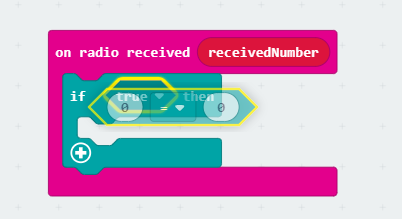

Everyone else in your chain needs to create a program which will detect when a radio signal is sent, check if it is their cue, do nothing if it isn't, and play the animation and cue the next Micro:bit if it is. First, take a fresh Micro:bit editor and remove the default blocks. Then, we need a 'On radio recieved recievedNumber' block from the 'Radio' tab, and an 'If True then' block from the 'Logic' tab. From the 'Logic' tab, select a '0 = 0' block and drag it on top of the 'True' part of the 'If True then' block.

Once we have done this, we can drag the 'recievedNumber' part of the 'On radio recieved recievedNumber' block to the first '0', then select the second one and change it to the Micro:bit's position in the sequence. The second Micro:bit, for example, should look something like this:

From here it's simple. We need to replicate the steps we used on the first Micro:bit to create an animation, then to send a signal to the next Micro:bit, unless you are the last Micro:bit in the sequence. Just be sure to change the number you broadcast to the next Micro:bit. Save and upload this sketch, then try it out by pressing 'A' on the first Micro:bit. If it dosn't work, check your code and make sure you havn't got a faulty Micro:bit.